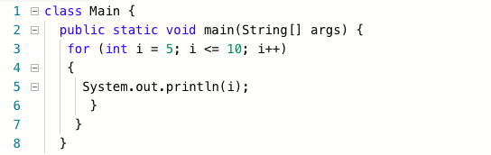

Basically speaking a loop is just an action being repeated over and over again. An example of a loop that you might see in life if you breathing in and out of you walking. You preform the same
action over and over again without even realising it. In Java programming language there are a couple different type of loops, and you use these loops in different circumstances. These two
loops are called for loops and while loops.
A while loop is a type of loop. You use this type of loop when you know don't exactly know how many iterations your program will preform. The loop will run as long as the statement is true, so
you typically have a general idea, and use a boolean statement to make the code run. While
the statement is true, the program inside the loop will run. Something that you have to not is
that you have to make sure you don't get an error and create an infinite loop. This is when the statement in your loop is always true and it runs forever, which isn't fun because it will crash
your system if you fail to terminate the program. Below is an example of a working loop. First we initialise the variable, then we create our while loop and set the boolean condidtion inside
the parentheses. Then the code you want to run is inside of the curly brackets.
Here we have the other type of loop, a for loop. The loop wil be used when you know how many times you want your loop to run for. It also looks a bit different then a while loop. A while loop just has the condiction inside the parentheses but a for loop has three things that go inside the loop. You first have the initalization step, you create an integer and then set its value. The second step is to set your boolean condidtion that uses the varaible that you have just created. The final step is the increament of decrement. This means that we either increase the variable or decrease a varible a certain amaount ever time the program runs. Make sure you seperate each of these step using a semicolon. An example of when a for loop would be useful is when you want to print the integers in even posistions in a string. Below we have a simple for loop that does the same thing as the while loop above. The only different thing here is the formatting.
